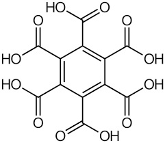
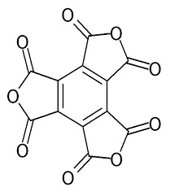
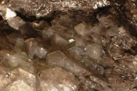
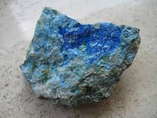

La prendo alla larga: una delle mie sintesi utopiche è da tempo quella di preparare l'acido mellitico o acido benzenesacarbossilico (ho ancora da qualche parte tutta la procedura); ma so già che non la farò mai... terribilmente lungo e dispendioso il procedimento e troppo aleatorio il risultato.
Riassumo in due parole cosa si dovrebbe fare: si tratta di ossidare il carbonio (sotto forma di grafite pura) per ebollizione a riflusso con acido nitrico concentratissimo per un centinaio di ore.
Filtrare il residuo ed evaporare sotto vuotto l'acido in eccesso fino a secchezza.
Dovrebbe rimanere alla fine qualcosa di solido...
Esiste anche un altro metodo: ossidazione "insistente" con permanganato in ambiente alcalino... ma siamo lì, meglio lasciar tutto nel paese dei sogni!
L'acido mellitico è anche interessante per la sua inerzia chimica: nasce bollito in HNO3 al 98% e non fa nemmeno una piega se lo buttiamo in H2SO4 concentrato bollente.
Bella scorza, non c'è che dire!
L'avatar dell'autore di questo blog (quel simbolino che mi sono assegnato alla registrazione) è la formula chimica della figlia dell'acido mellitico, ovvero l'anidride mellitica.
Ecco le loro belle strutture di padre e figlia (quest'ultima ha preso tutto dal padre, ma ha fatto una cura per perdere acqua e si è "rinsecchita" chiudendosi su se stessa:


(a) Acido Mellitico e (b) Anidride mellitica
Questo acido mi ha sempre intrigato per due motivi:
- primo perchè ha una bellissima formula, un benzene interamente circondato da sei gruppi carbossilici;
- secondo perchè un sale dell'acido mellitico è un MINERALE!
Un minerale ORGANICO! Bello due volte allora!
Sì, perchè dire "minerale" e dire "organico" sembra un paradosso, dato che la parola "organico" ci suona sempre come qualcosa che ha attinenza, vicina o lontana, con la biologia.
Naturalmente niente di tutto questo, si tratta di "organico" in senso chimico, cioè di uno degli infiniti composti del carbonio.
A parte i banali carbonati (che non rientrano in questo discorso) i minerali organici sono inaspettatamente abbastanza numerosi (ma sempre pochissimi rispetto alla sterminata famiglia dei minerali), e sono tutti rari o rarissimi.
Ne ho radunati un po' secondo una sequenza puramente indicativa e che non segue un ordine nè chimico nè mineralogico, li metterò semplicemente così come mi vengono.
Anche la loro genesi è del tutto varia, anche se ovviamente non saranno certo minerali magmatici, ma per lo più di origine idrotermale, di alterazione o di leggero metamorfismo.
Parto sicuramente dal primo e più famoso, la Mellite, che come dice il nome ha talvolta un bel colore giallo miele.

E' il sale di alluminio dell'acido di cui sopra, il benzenesacarbossilico o acido mellitico, Al2C6(COO)6•16H2O
La mellite è un minerale raro, che si presenta in aggregati resinosi e teneri; fu scoperto in una miniera di carbone della Turingia a fine settecento. E' sempre associato a giacimenti carboniferi di poche altre parti del mondo.
Bello anche il seguente minerale: la Julienite, che è un tiocianato di sodio e cobalto Na2Co(SCN)4•8H2O

Come località tipo si trova nei dintorni di Chamibumba, in una provincia congolese del Katanga.
Trattandosi di cobalto non può essere che lì.
Ma io quando sento nominare la parola "Katanga" devo per forza fare un inciso.
Data la mia anagrafica, ho purtroppo fatto in tempo a sentir troppe volte inneggiare:
"-studente, operaio, prendi una spranga e vieni con noi in Katanga...!".
Che Iddio (o soprattutto la Storia... meglio tutti e due!), conoscendo il Katanga, abbiano pietà di noi.
Con questo patetico ricordo del periodo post-sessantottesco, termino la prima parte di questo divertimento con i minerali organici.